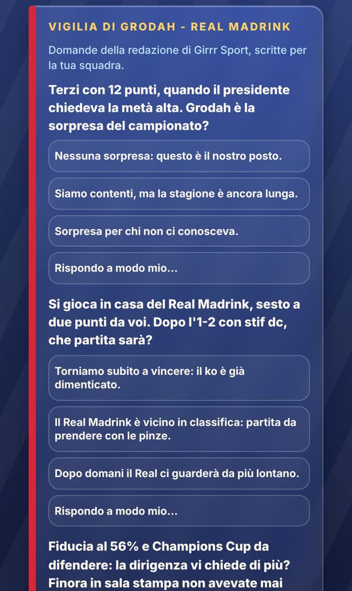

Già online
Domande su misura
In conferenza stampa le domande le scrive la redazione di Girrr Sport, diverse per ogni squadra e sulla sua situazione vera.
- Classifica, obiettivo del presidente, avversario, Derby, promesse, fiducia, silenzi stampa
- Tre risposte per domanda: sicura, umile, provocatoria
- Se la conferenza è già pubblicata o il file della redazione non c'è, restano le domande di sempre
Dove: Conferenza, sotto il titolo «Vigilia di…».